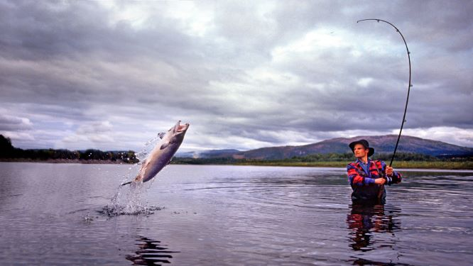
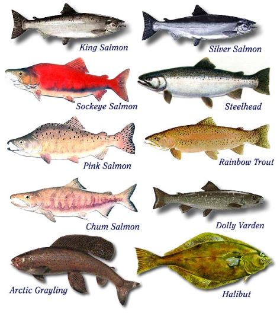
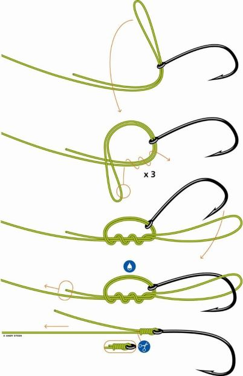
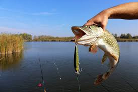

<ion-view view-title="South African Fishing Log">
  <ion-content>
    <div class="card">
      <div class="item item-divider">
        Welcome Fish Logger
      </div>
      <div class="item item-thumbnail-left item-text-wrap">
        
        <h2>Here can we log new Catches</h2>
      </div>
      <div class="item item-thumbnail-right item-text-wrap">
        
        <h2>Look for fish species...</h2>
      </div>
      <div class="item item-thumbnail-left item-text-wrap">
        
        <h2> knots...</h2>
      </div>
      <div class="item item-thumbnail-right item-text-wrap">
        
        <h2> or look through your previous catches...</h2>
      </div>
    </div>
  </ion-content>
</ion-view>
